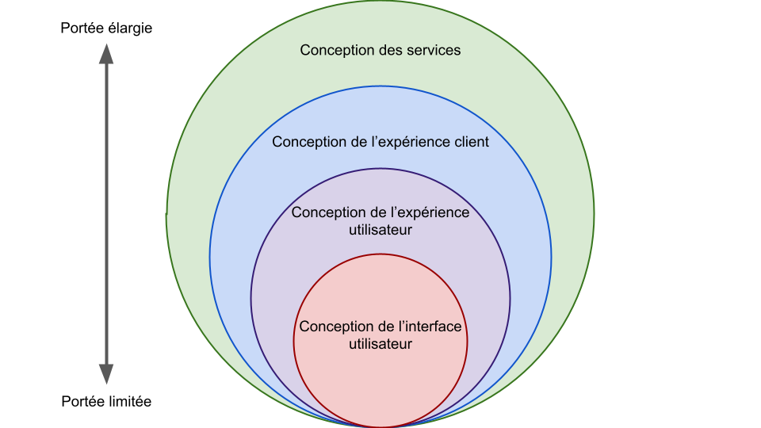
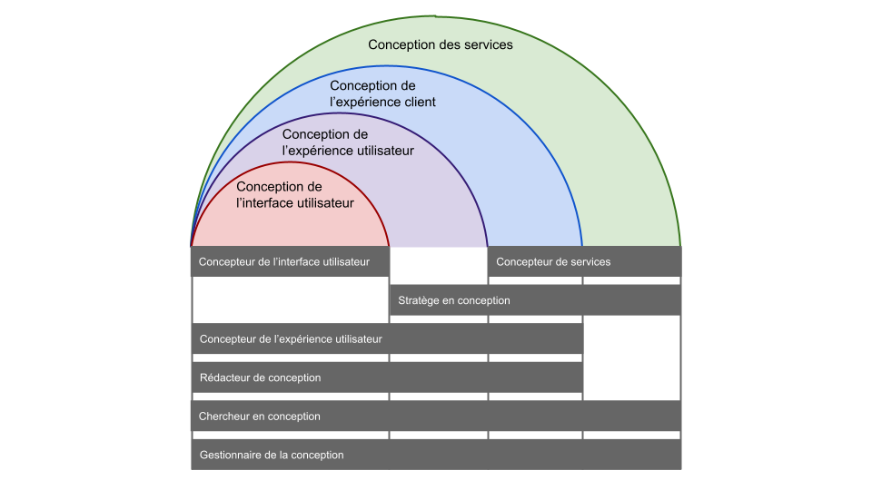
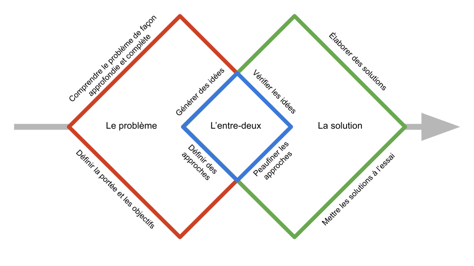

Embaucher le bon concepteur
Introduction
Ce guide explique les principaux facteurs à considérer dans le cadre de l’évaluation de vos besoins en matière d’embauche de concepteurs. Il vous aidera à remplir la fiche d’autoévaluation qui l’accompagne.
Avant de commencer : Évaluez votre contexte
Astuce
Nous vous recommandons d’avoir lu et compris le document Comprendre la conception et les rôles de concepteur avant d’utiliser ce guide.
Les concepteurs peuvent jouer différents rôles et explorer différents types de conception, mais il est impossible pour une seule personne de tout faire. En précisant le contexte dans lequel vous vous trouvez, vous pourrez déterminer vos besoins en matière de concepteur, la possibilité d’en embaucher un et l’orientation stratégique de l’embauche.
Quatre facteurs déterminants dans la décision d’embaucher un concepteur : l’état, l’échéancier, le budget et la complexité.
L’état
La première chose que vous devez déterminer est l’état de vos travaux. En êtes-vous aux premières étapes ou à la mise en œuvre? Êtes-vous près d’un lancement?
L’état actuel de vos travaux vous permettra de déterminer le genre d’aide que vous pouvez solliciter.
Tableau 1 : Besoins de conception le long du cycle de vie d’un projet
| Planification préliminaire | Planification | Conception | Mise en œuvre | Après lancement |
|
|
|
|
|
Dans les premières étapes du projet, les concepteurs peuvent en faire davantage pour vous. Cependant, lorsque la mise en œuvre du projet avance, le type de conception nécessaire devient plus spécialisé.
Autoévaluation
Veuillez consulter la section 1.1 de la fiche d’autoévaluation.
L’échéancier
Votre projet a-t-il un échéancier serré ou souple en ce qui a trait aux efforts de conception? Combien de temps peut être accordé à la conception?
Bien que votre échéancier ne devrait pas avoir d'incidence sur l'embauche en tant que telle, il a des implications sur votre capacité à faire preuve d'agilité opérationnelle pour mener à bien l'effort de conception. (Tableau 2)
Tableau 2 : Différentes stratégies à adopter en fonction de l’échéancier prévu pour les efforts de conception
| Échéancier serré | Échéancier souple | |
| Efforts importants |
DesignOps (opérations de conception) (Équipe de conception + Soutien opérationnel) |
Équipe de conception (Affectations permanentes ou temporaires) |
| Efforts minimaux |
Experts intégrés (Professionnels en conception de l’interne ou de l’externe) |
Équipe d’intervention spéciale (Faire en apprenant) |
Règle générale :
- Un échéancier serré et de nombreuses tâches ne veulent pas nécessairement dire que vous aurez besoin de plus de personnes ou de ressources. Vous aurez tout simplement besoin d’une plus grande agilité opérationnelle, sans devoir consacrer davantage de temps à la gestion et au soutien des efforts.
- Si les tâches de votre projet ne s’harmonisent pas aux contraintes relatives à votre échéancier, pensez à adopter des mesures plus stratégiques (telles que la redéfinition de la portée des efforts).
Autoévaluation
Veuillez consulter la section 1.2 de la fiche d’autoévaluation.
Le budget
Quel est votre budget pour l’embauche de concepteurs? Est-il souple? Quel compromis pouvez-vous vous permettre lorsque votre budget et vos besoins ne s’harmonisent pas?
Votre budget n’a pas seulement une influence sur votre capacité d’embauche (en nombre de concepteurs), mais également sur votre capabilité d’embauche (ce que vous pouvez vous permettre).
Autoévaluation
Veuillez consulter la section 1.3 de la fiche d’autoévaluation.
La complexité
À quel point les travaux sont-ils complexes?
Il s’avère souvent utile de déterminer la complexité de votre projet à l’aide d’une variante du modèle Cynefin :
Tableau 3 : Les quatre types de projets
| Types | Caractéristiques | Incidences | Exemples |
| Évident |
Il s’agit d’une situation « connus connus » : le problème et la solution sont bien compris et vous savez comment mettre en œuvre la solution. Vous ne devez prêter attention qu’aux détails des efforts déployés. |
Les efforts de conception ont tendance à être missionnaires plutôt qu’exploratoires; les tâches sont bien définies et précises. |
Conception d’une interface utilisateur à l’aide d’une bibliothèque normalisée d’IU. |
| Compliqué |
Il s’agit d’une situation « inconnus connus » : il y a plusieurs solutions tout autant valables même lorsque le problème est bien compris. Une analyse est nécessaire pour élaborer la bonne solution. |
Les efforts de conception ont tendance à être exploratoires et sont axés sur les solutions. Il est primordial de vérifier la compréhension de la solution. |
Fondée sur l’inspection de plusieurs règlements, politiques et intervenants. |
| Complexe |
Il s’agit d’une situation « inconnus inconnus » : le problème et la solution sont mal compris. Une analyse et une synthèse sont nécessaires pour contextualiser le problème et déterminer une solution. |
Les efforts de conception ont tendance à être exploratoires et sont axés à la fois sur le problème et la solution. Il est primordial de vérifier la compréhension du problème. |
Projet pilote d’innovation; conception des activités; gestion. |
| Chaotique |
Il n’y a pas de contexte clair et stable du problème; les exigences sont souvent incomplètes, contradictoires et changeantes. La mise en œuvre de solutions potentielles change le problème en soi. |
Les efforts de conception ont tendance à être holistiques, émergents et persistants et nécessitent une collaboration avec tous les secteurs de travail pertinents. |
Conception de politiques; conception organisationnelle. |
Règle générale :
- La variété, le volume et la vitesse de votre projet ont la plus grande incidence sur la variété, le volume et la vitesse des efforts de conception;
- Consultez toujours les membres de votre équipe pour déterminer ou estimer les caractéristiques des efforts de conception.
Autoévaluation
Veuillez consulter la section 1.4 de la fiche d’autoévaluation.
Haut
Pourquoi avez-vous besoin d’un concepteur?
Qu’est-ce qui vous a mené à croire que vous aviez besoin d’un concepteur? D’où proviennent ces indices?
Vous devez avoir une raison justifiable pour embaucher des concepteurs. Il peut s’agir du travail à faire ou des objectifs à atteindre.
Comme approche de résolution de problèmes, la conception se divise en quatre niveaux :
- La conception des services;
- La conception de l’expérience client;
- La conception de l’expérience utilisateur;
- La conception de l’interface utilisateur.

Figure 1 : Les quatre niveaux de conception sur un spectre
Référence
Le document intitulé Comprendre la conception et les rôles de concepteur décrit en détail les quatre niveaux de conception.
D’une façon ou d’une autre, les travaux à réaliser se rattachent à un ou plusieurs des quatre niveaux. Consultez les membres de votre équipe ou obtenez de l’aide pour déterminer comment vos besoins en matière d’embauche de concepteurs se rattachent au niveau de conception.
Autoévaluation
Veuillez consulter la section 2.1 de la fiche d’autoévaluation.
Haut
Que fera le concepteur?
Qu’avez-vous besoin que le concepteur fasse?
Comme l’explique le document Comprendre la conception et les rôles de concepteur, un concepteur peut remplir plusieurs rôles dans le cadre d’efforts de conception.
En général, tout rôle de concepteur comprend l’une ou plusieurs des cinq actions suivantes :
- Fournir des renseignements;
- Définir;
- Créer;
- Améliorer;
- Mettre à l’essai.
Voici quelques exemples des cinq actions.
Fournir des renseignements :
- sur les besoins des utilisateurs;
- sur les produits ou les services;
- sur le problème (activité ou technologie);
- sur la solution (activité ou technologie);
- sur les besoins des intervenants.
Définir :
- la portée ou le plan des efforts de conception;
- la portée du problème (activité ou technologie);
- la portée de la solution (activité ou technologie);
- la portée du projet, du produit ou du service;
- l’expérience utilisateur du produit ou du service.
Créer :
- une interface utilisateur et son contenu;
- un flux de travail (flux de l’interface utilisateur ou processus);
- une norme ou une spécification de conception;
- une feuille de route du produit ou du service;
- les caractéristiques du produit ou du service.
Améliorer :
- les caractéristiques du produit ou du service;
- les activités ou le processus opérationnel;
- les activités numériques;
- la prestation de services;
- l’expérience de l’utilisateur du produit ou du service.
Mettre à l’essai :
- les caractéristiques du produit ou du service;
- l’expérience de l’utilisateur du produit ou du service;
- un nouveau produit ou service;
- un nouveau processus opérationnel;
- une nouvelle idée ou une initiative qui fait l’objet d’un projet pilote.
Règle générale :
- Concentrez-vous sur ce que le concepteur doit faire plutôt que sur ce qu’il doit produire comme résultat;
- Soyez aussi précis que possible dans votre description de ce que doit faire le concepteur.
Autoévaluation
Veuillez consulter la section 2.2 de la fiche d’autoévaluation.
Haut
Quelles compétences le concepteur doit-il posséder?
Quelles compétences sont essentielles? Quelles compétences sont de bons atouts?
Il est tentant de rechercher un concepteur qui possède le plus de compétences possibles, bien que vous n’ayez peut-être pas besoin de chacune d’entre elles. Cependant, plus vous cherchez quelqu’un avec beaucoup de compétences, plus vous aurez de la difficulté à trouver la bonne personne.
Comme l’explique le document Comprendre la conception et les rôles de concepteur, il y a sept rôles populaires dans le domaine de la conception :
- Concepteur de services;
- Chercheur en conception;
- Rédacteur de conception;
- Concepteur de l’expérience utilisateur;
- Concepteur de l’interface utilisateur;
- Stratège en conception;
- Gestionnaire de la conception;

Figure 2 : Les quatre niveaux du spectre de conception couverts par les rôles de concepteur
Autoévaluation
Veuillez consulter la section 3.1 de la fiche d’autoévaluation.
Haut
Comment trouver un équilibre entre les compétences générales et les compétences spécialisées?
De quel type de concepteur avez-vous besoin?
Même dans un seul rôle, un concepteur peut largement différer en fonction de son équilibre entre ses compétences générales et ses compétences spécialisées. Certains sont des spécialistes, d’autres, des généralistes. Certains adoptent une approche plus stratégique, d’autres, plus tactique. Ces différents aspects des concepteurs ne répondent pas toujours à vos besoins de la même façon.
Déterminer le type de concepteur dont vous avez besoin vous aidera à cibler cet équilibre et à établir le genre de concepteur qui répond le mieux à vos besoins.
Les types de concepteurs permettent de décrire la qualité d’un concepteur selon les quatre facteurs suivants :
- L’expertise : à quel point le concepteur connaît-il la conception?
- La trousse à outils : à quel point le concepteur est-il polyvalent quant à ses outils et à ses méthodes
- La connaissance du domaine d’activités : à quel point le concepteur connaît-il le domaine d’activité?
- La maturité : quelle est l’expérience du concepteur?
Selon ces quatre facteurs, il existe huit types populaires de concepteurs :
- Spécialiste tactique subalterne;
- Spécialiste tactique principal;
- Spécialiste stratégique subalterne;
- Spécialiste stratégique principal;
- Généraliste tactique subalterne;
- Généraliste tactique principal;
- Généraliste stratégique subalterne;
- Généraliste stratégique principal.
Ces huit types populaires de concepteurs diffèrent sur le plan de l’expertise, de la trousse à outils, de la connaissance du domaine d’activités et de la maturité (Tableau 4 et Tableau 5).
Tableau 4 : Ce que signifie un pointage élevé et un pointage faible pour chaque facteur
| Facteur | Pointage élevé | Faible pointage |
| Expertise | Bon à de nombreuses activités de conception |
Bon à peu d’activités de conception |
| Trousse à outils | Beaucoup d’outils et de méthodes |
Peu d’outils et de méthodes |
| Domaine d’activités | Bonne connaissance du domaine d’activités |
Connaissance limitée du domaine d’activité |
| Maturité | Beaucoup d’expérience |
Peu d’expérience |
Tableau 5 : Les huit types populaires de concepteurs et leurs caractéristiques
(Légende : F — pointage faible, É — pointage élevé)
| Types | Expertise | Trousse à outils | Domaine d’activités | Maturité |
Spécialiste tactique subalterne |
F | É | F | F |
Spécialiste tactique principal |
F | É | F | É |
Spécialiste stratégique subalterne |
F | F | É | F |
Spécialiste stratégique principal |
F | F | É | É |
Généraliste tactique subalterne |
É | É | F | F |
Généraliste tactique principal |
É | É | F | É |
Généraliste stratégique subalterne |
É | F | É | F |
Généraliste stratégique principal |
É | F | É | É |
Comment pouvez-vous savoir quel type de concepteur convient le mieux à vos besoins en matière d’embauche?
La nature du travail, combinée à une bonne estimation formulée à l’aide de mesures et d’expertise, offrent souvent les meilleurs indices.
Astuce
Tout comme pour la recherche et l’élaboration, les efforts de conception peuvent être difficiles à estimer.
Assurez-vous toujours que vos estimations et vos décisions sont orientées par l’expertise au niveau opérationnel.
Consultez toujours les membres de votre équipe ou obtenez de l’aide supplémentaire pour vérifier que vous comprenez vos besoins en matière d’embauche de concepteurs.
Autoévaluation
Veuillez consulter la section 3.2 de la fiche d’autoévaluation.
Haut
Avant de terminer : Réévaluez votre contexte
Comment l’état, l’échéancier, le budget et la complexité de votre projet s’harmonisent-ils aux besoins en matière d’embauche que vous venez d’identifier?
L’état
Votre projet en est-il à ses premières ou à ses dernières étapes?
En général, le cycle de vie du projet passe du problème, à l’entre-deux, puis à la solution (Figure 3) :

Figure 3 : Le problème, l’entre-deux et la solution
Les efforts de conception peuvent être très différents à l’étape du problème, de l’entre-deux ou de la solution.
L’échéancier
Quel est le rythme de votre projet et, par conséquent, quel devra être le niveau d’effort de conception?
Votre échéancier est un facteur essentiel pour déterminer la combinaison de compétences, d’expertise, d’expérience et de types de concepteurs dont vous avez besoin.
Le budget
Votre budget pour l’embauche de concepteurs a une incidence critique sur la stratégie que vous devrez adopter pour bâtir votre équipe : comment tirerez-vous profit de l’expertise et des compétences du concepteur que vous embaucherez pour complémenter votre équipe et vice versa?
Parfois, vous ne serez peut-être pas capables d’embaucher un concepteur qui répond à tous vos besoins de conception. Vous devrez peut-être penser à une façon d’utiliser les compétences et l’expertise des membres de votre équipe en matière de conception pour complémenter les efforts du concepteur que vous embaucherez ou vice versa.
La complexité
Dans quelle mesure les efforts de conception sont-ils reliés à d’autres aspects du projet?
Certains efforts de conception nécessitent une coordination, une coopération ou une collaboration importante entre le concepteur et les autres membres de l’équipe; d’autres, moins.
Offrir un environnement de soutien au concepteur qui arrive au sein de votre équipe est essentiel pour la réussite de votre embauche. Plus la coordination, la coopération ou la collaboration sont nécessaires, plus les tâches deviennent complexes. Vous devez tenir compte de cette complexité pour bien gérer votre projet.
Une fois que vous aurez réévalué l’état, l’échéancier, le budget et la complexité de votre projet, veuillez consulter la fiche d’autoévaluation et réviser vos réponses au besoin.
Haut
Obtenir de l’aide
Le Centre d’expertise en conception centrée sur l’être humain peut vous aider à évaluer vos besoins en matière d’embauche de concepteurs.
Pour communiquer avec nous, envoyez-nous un courriel, ou rejoignez notre groupe officiel MS Teams.
Façons d’embaucher
Experts-conseils
Si vous avez besoin d’un concepteur à court terme, des mécanismes d’approvisionnement sont mis à votre disposition pour embaucher des experts-conseils qui répondront à vos besoins en matière de conception. Veuillez communiquer avec nous pour obtenir davantage de renseignements.
Personnel
Si vous avez besoin d’un concepteur à long terme, nous pouvons vous aider à trouver des employés qui répondront à vos besoins. Des énoncés des critères de mérite ont été rédigés spécialement pour l’embauche de professionnels de la conception. Veuillez communiquer avec nous pour obtenir davantage de renseignements.
Haut
Références
Toutes les références suivantes sont offertes par le Centre d’expertise en conception centrée sur l’être humain.
- Le document Comprendre la conception et les rôles de concepteur vous offre les connaissances fondamentales de la conception comme profession et des différents rôles de concepteur;
- Le document Embaucher le bon concepteur : Fiche d’autoévaluation vous aide à autoévaluer vos besoins en matière d’embauche et accompagne le présent document;
- Le document Embaucher le bon concepteur : Liste de vérification aux fins d’évaluation vous offre un outil d’autoévaluation plus en profondeur pour déterminer vos besoins en matière d’embauche de concepteurs.
Haut
Conditions d'utilisation
Les documents que l’on trouve sur ce site Web ont été produits ou rassemblés pour offrir aux Canadiens et Canadiennes de l’information sur les programmes et services offerts par le gouvernement du Canada. Ils sont assujettis aux conditions suivantes.
- Date de modification :